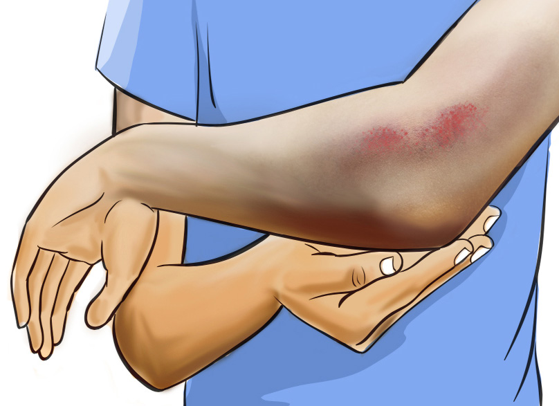

Activity 2.1
Go through different sources, including online and physical sources and involve your friends and other players to:
Bruises
Bruises are common injuries in sports where, blood is trapped and leaks out to the skin as a result of a direct blow or fall. The affected area may undergo swelling with reddish or purple mark on the skin, as shown in Figure 2.2. The common symptoms of bruises include, pain and tenderness, swelling, warmth or heat, stiffness or limited range of motion, and itching as it heals.

Dislocation
Joints can become dislocated when bones are forced out of their normal positions, as shown in Figure 2.3. This is a slip-out of bones in the joint which occurs when extreme force wrenches the ligament. Dislocation occurs where the surrounding tissues like tendons and ligament are damaged. The common symptoms of dislocation include, severe pain, deformity, swelling, limited range of motion, numbness or tingling, instability, difficulty in using the affected limb, popping sounds, shock and disorientation. This injury needs medical treatment to relocate the joint.